|
STM32 Motor Control SDK MCFW-6.4.1
Software Development Kit to build applications driving PMSM Motors with STM32
|
|
STM32 Motor Control SDK MCFW-6.4.1
Software Development Kit to build applications driving PMSM Motors with STM32
|
Prev: Getting Started with Motor Control SDK ↤| Table of Contents |↦ Next: Motor Control Firmware architecture
Motor Profiler Update started from MCSDK version 6.2.0 or newer
In a way to ease the user to profile a motor, this version of MCSDK provides an updated efficient manner to generate a Motor Profiler SW binary to answer this requirement.
The new MCSDK WB tool is able to generate a Motor Profiler project based on described boards and the FOC motor control SW. In consequence, there is no more needs to store and update all possible or new Motor Profiler binaries that depend on a HW board set up and different MCU topologies.
The Motor Profiler algorithm is provided into the MCSDK FW as a library linkable and compliable with ARMv7 and ARMv8 architecture. The algorithm runs only on the ARM architectures with FPU embedded. In consequence It is not possible to generate a motor profiler binary with the STM32F0, STM32G0, STM32C0 families.
Any kind of IDEs or ARM compilers can be used to generate this Motor Profiler binary. Depending of the IDEs (type of arm compilers i.e. armcc, gcc...), the Motor Profiler algorithm will be embedded into three different libraries. The following table describes these different versions of libraries.
Table 1: library name versus IDE compiler version and ARM architecture
| IDE Compiler | Arm V7 Motor Profiler Lib | G4xx Arm V7 Motor Profiler Lib | ARM V8 Motor Profiler Lib |
|---|---|---|---|
| IAR, Stm32Cube | libmp-IAR_ARMv7-M.a | libmp-G4-IAR_ARMv7-M.a | libmp-IAR_ARMv8-M.a |
| Keil | libmp-MDK-ARM_ARMv7-M.a | libmp-G4-MDK-ARM-ARMv7-M.a | libmp-MDK-ARM_ARMv8-M.a |
The MCSDK WB tools contains .json board description files. For some power and inverter boards, a resistorOffset parameter is embedded, useful for determinate the resistor rs, one of the electrical parameters of the motor. As soon as one of these kinds of board is described and use for motor profiling, this parameter must be present into its corresponding .json file. If a Motor Profiler FW is generated without resistorOffset parameter described into the power or inverter board selected, a default value equal to -32768 of this parameter will be found into the resulting generated Motor Profiler FW. In consequence, the motor profiling will not be allowed by the Motor Profiler tool. The Motor Profiler tool provides then the ability to compute this missing resistorOffset parameter.
The Motor Profiler tool is a subset of the Motor Pilot tool, and it shares the same interface. This proven and efficient tool allows to connect a control or inverter board and execute the profiling of a motor by computing electrical and mechanical parameters of a motor.
Some of the motor control algorithms are using Hall sensor to detect position and speed of the motor. With Hall sensor the positioning of the rotor is obtained by reading the digital signals coming from the Hall sensors (i.e. connected to three timers channel inputs). Thanks to the Motor Profiler tool and the Motor Profiler FW loaded into a control or inverter board, any Hall sensor can be profiled generating two specific parameters useful for Hall processing.
A described board configuration means that the power or inverter board is present into the MCSDK WB data base (MC_SDK_6.x.y\Utilities\PC_Software\STMCWB\assets\hardware\board), as a .json file, and the reistorOffset parameter is embedded into this board description file. As it is done for any kind of FOC project, the MCSDK WB version allows the user to generate a Motor Profiler project by following the following steps:
Create a new motor control FOC algorithm configuration project with either a High Voltage motor or a low volatge motor if the motor is not known, a described power and a control board, or a described inverter board. The following table contains the list of described power and inverter boards supported by this MCSDK WB version to generate Motor Profiler project.
Table 2: list of described boards containing resistorOffset parameter
| Inverter | Power Board | Power Board | Power Board | Power Board | Inverter | Power Board | Power Board | Power Board | Power Board | Power Board | Power Board |
|---|---|---|---|---|---|---|---|---|---|---|---|
| EVSPIN32G4 | X-NUCLEO-IHM07M1 | X-NUCLEO-IHM16M1 | X-NUCLEO-IHM17M1 | X-NUCLEO-IHM08M1 | B-G431B-ESC1 | STEVAL-IHM023V3 | STEVAL-IPM05F | STEVAL-IPM10B | STEVAL-IPM15B | STEVAL-IPMN3GQ | STEVAL-IPMNM1N |
This list may be updated as soon as STMicroelectronics designs new efficient boards to support improvement in motor control algorithm and new STM32 ICs in each new MCSDK release.
When the project is created, first check the "current sensing" configuration and specially set a "Three shunt resistors" for "Current reading topology". The one-shunt resistor current reading topology is not supported for the generation of the Motor Profiler FW. Depending of the inductance component of the motor, the current into phases could have a high level of ripple. Then the PWM frequency can be increase to provide a better control of the motor for its profiling.
Figure 1 : MCSDK WB Current reading topology
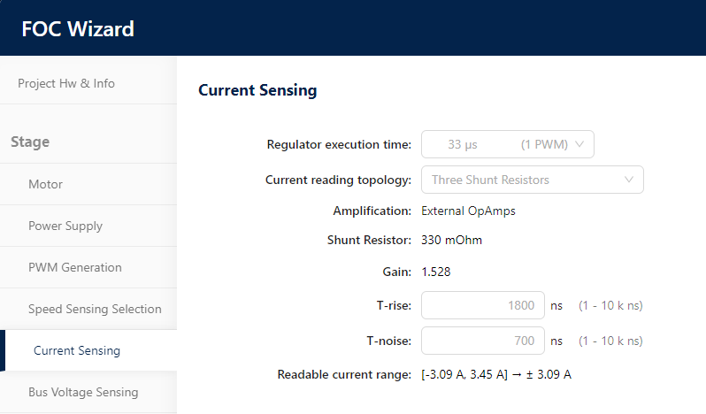
Now, a choice of the number of ADCs is possible into the "ADC" line. A "3 shunts / 2 ADC current sensing" topology is generally chosen allowing a greater modulation index for PWM by sampling two currents simultaneously in a short time with two different ADCs.
Figure 2 : MCSDK WB ADC Topology
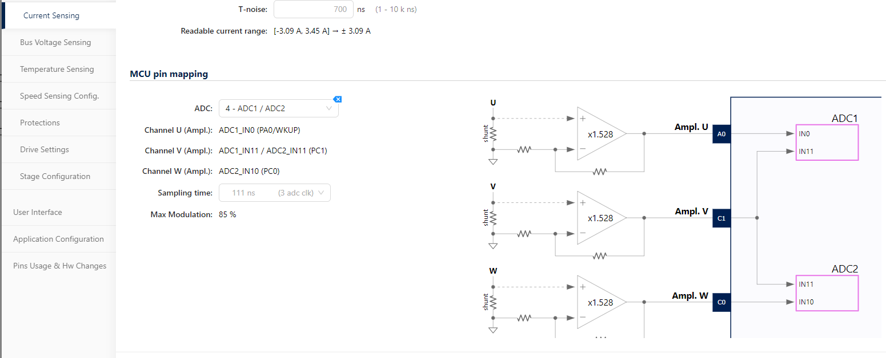
To configure this created FOC project in a motor profiling way, please tick the "Motor Profiler" feature into the "Application configuration" stage.
Figure 3 : MCSDK WB Motor Profiler project flag
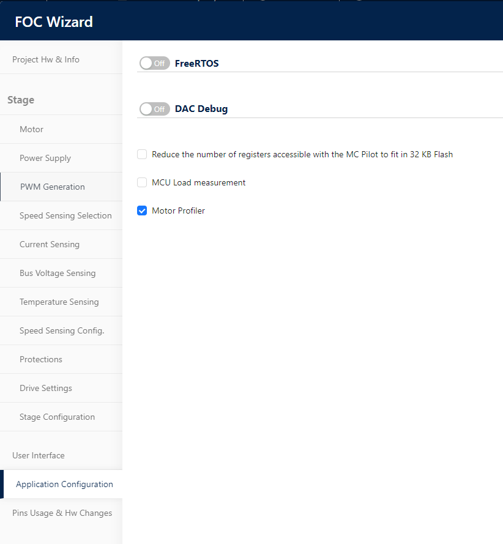
This is time to save and generate the Motor Profiler project for the wished IDE tool chain (i.e. Stm32CubeIDE) proposed by the MCSDK WB.
Figure 4 : MCSDK WB project save and generation
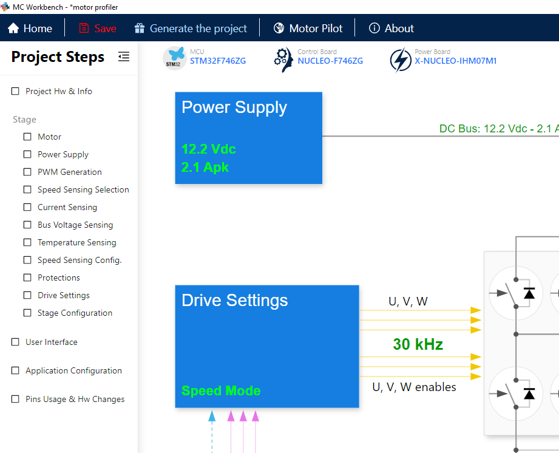
As soon as the Motor Profiler project has been generated, a compilation of this project must be performed thanks to the selected IDE or any ARM compilation script.
Figure 5 : MCSDK WB project generated
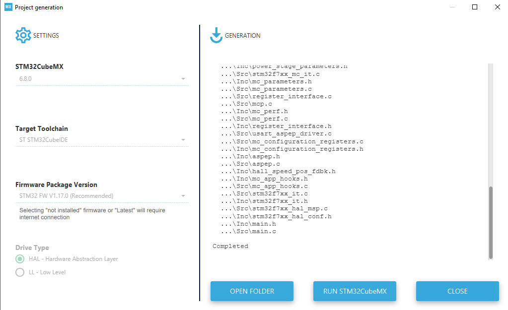
The binary generated is now ready to be loaded into the FLASH of the control or inverter board with the selected IDE tool or using i.e. the STM32CubeProgrammer tool.
When the Motor Profiler FW runs into the MCU, the Motor Profiler tool can be used, by launching the Motor Pilot tool starting from 6.2.0 (V1.2.0).
The first action is to select the "launch profiler" button to open the Motor Profiler GUI. Note that if the Motor Pilot is already open, i.e. with a FOC GUI, a load of the profiler.qml can be done by executing a "GUI/load GUI" action.
Figure 6 : Motor Pilot tool start window
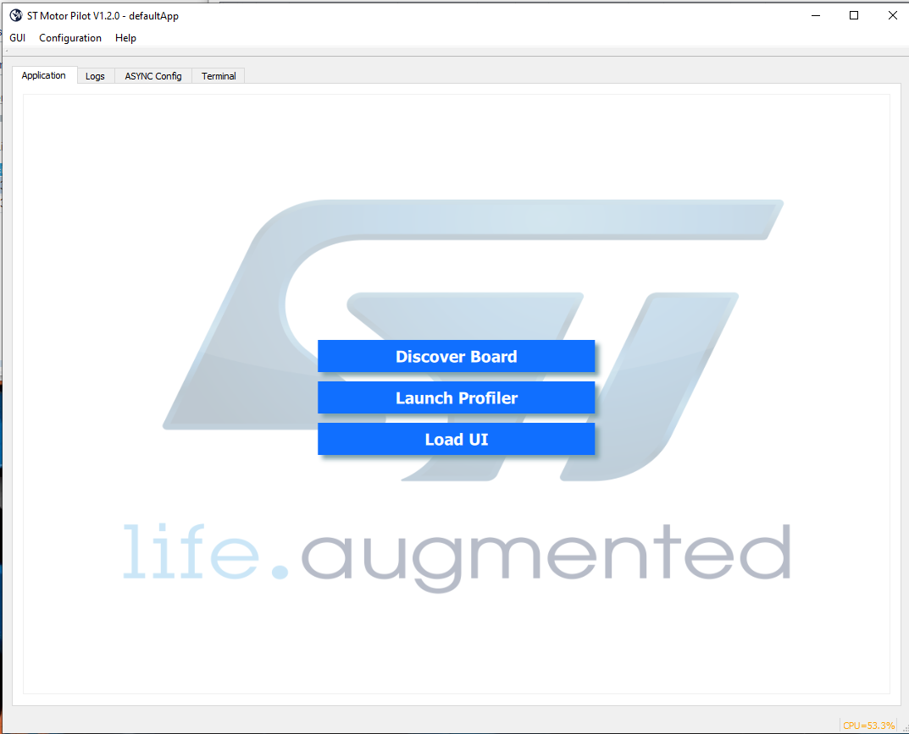
Like for the Motor Pilot, check the Board connection part, and connect the Motor Profiler tool to the control or inverter board. A Motor Profiler GUI is now accessible for the user.
Figure 7 : Motor Profiler tool connection interface part
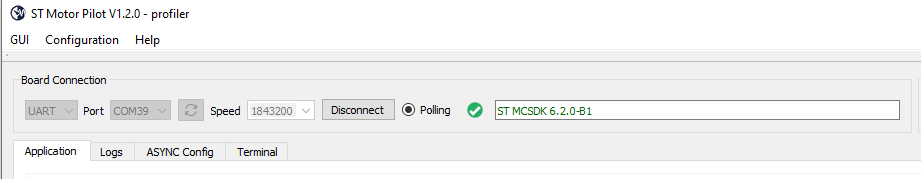
As soon as the Board is connected, all pieces of information are displayed, and the Motor Profiler tool is now able to communicate with embedded FW to profile the motor.
Figure 8 : Motor Profiler tool start profile window
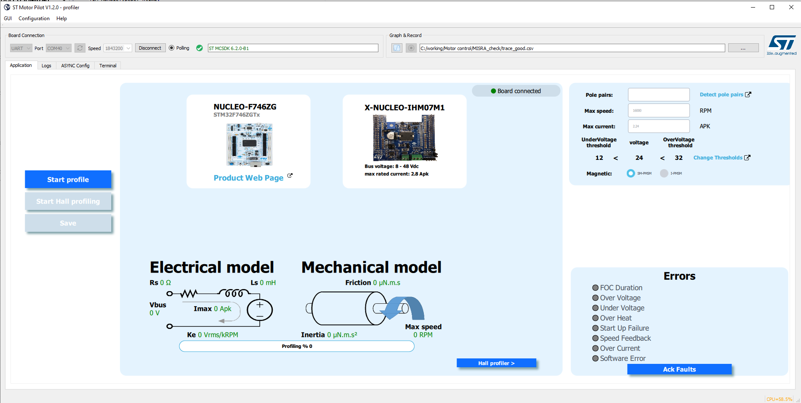
Please, configure the required know information of the motor: Pole pairs, max speed and max current information, and voltage thresholds. Besides, the internal permanent magnet synchronous motors (IPMSM) with its Ld/Lq ratio, or the surface permanent magnet synchronous motors (SM-PMSM) can be selected.
Figure 9 : Motor Profiler tool motor input parameters
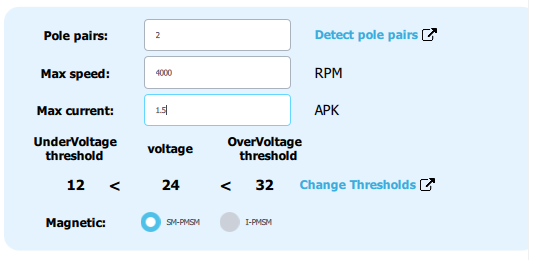
Finally, it is time to press the "start profile" button. The motor profiling sequence starts and electrical and mechanical model parameters are successively computed during the execution of the profiling represented by the progress of the bar increment. As soon as the profiling is finished all these parameters are updated and displayed. To end, an option is proposed to save all these motor parameters into a .json file.
Figure 10 : Motor Profiler electrical and mechanical model parameters
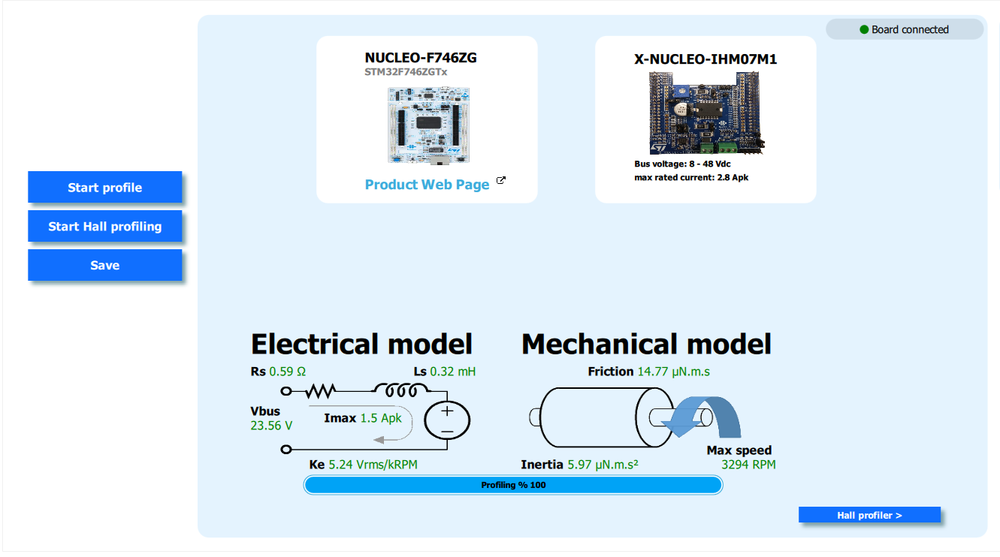
The Parameter resistorOffset known also as calibration factor is physically an offset in the estimated resistance (measured in ohm). During the measurement of the motor resistance, there is a lot of non-ideal factors in the model i.e:
• The Vds On of the conducting power switches
• The voltage drop in the free-wheeling diodes
• The applied deadtimes
These contributors generate an error in the estimated voltage applied to the motor to identify its resistance Rs. The resistorOffset parameter allow to compensate all these factors (especially for measurement of low values of resistance). A calibration factor technique is used by executing a Motor Profiler estimation (only the resistance measurement) on a motor that have a known resistance value and compute the calibration factor by difference.
In case that the resistorOffset of the power or inverter board is unknow, the Motor Profiler FW offers the ability to compute this parameter. This mode is called power board characterization. As soon as a Motor Profiler FW binary is generated, the resistorOffset parameter will be equal to -32768. After loading the Motor Profiler FW, the Motor Profiler tool is now able to compute this parameter. To characterize a power or inverter board the user must connect to its board another motor which some parameters are know like: pairs poles, max speed, max current and specially the resistor Rs parameter.
In the Motor Profiler tool, after updating motor information described above, please press the "Offset Detection" button to start the "resistorOffset" computation.
Figure 11 : Motor Profiler tool with only "Offset Detection"
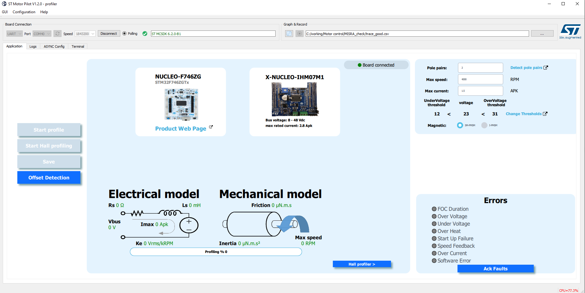
As soon as the Offset Detection button is pressed, the power characterization mode of the Motor Profiler FW starts. When the progress bar reaches the 100%, the user may now enter the know Motor Resistor Rs parameter (i.e. 0.58) of the motor used for characterization. The resulting resistorOffset value is now available (i.e. 1.545).
Figure 12 : Motor Profiler tool example of "resistorOffset" computed
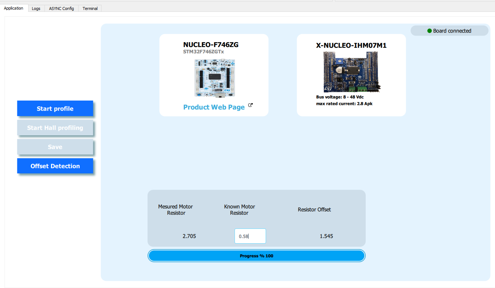
Note, that by performing a Start profile after characterization of the resistorOffset, the Motor Profiler tool will update the resistorOffset parameter into the Motor Profiler FW. By removing the know motor and putting the new motor to profile, the tool is now able to perform the profiling of the motor after updating its know characteristics (pole pairs, max speed, max current...). As soon as the profiling of the motor is finished, the Motor Profiler tool does not allow anymore to perform an "Offset Detection". Only a new generation of the Motor Profiler project with a missing resistorOffset into the .json file of the power or inverter board done by the MCSDK WB, or a manual change of the parameter #define RESISTOR_OFFSET -32768 into the inc/parameters_conversion.h file of the generated Motor Profiler project, will allow to perform a new "Offset Detection" by the Motor Profiler tool.
Figure 13 : Motor Profiler tool after offset Detection and new Start Profile actions
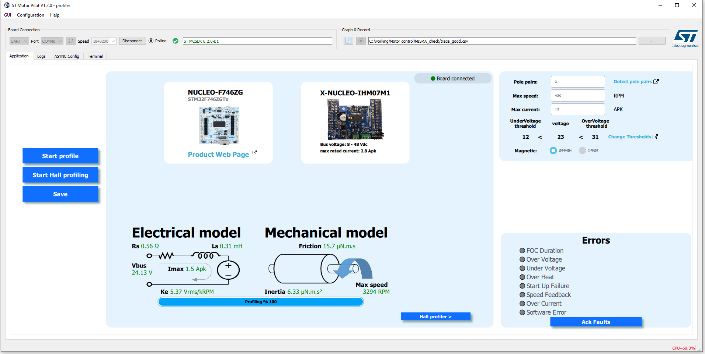
The last action of the resistorOffset parameter computation process is to update the .json file of the used power or inverter board. As a matter of fact, the resistorOffset parameter must be added into the beginning of the .json file at the motorDrives area, below the connectorType parameter as following example:
Figure 14 : .json example file with resitorOffset parameter
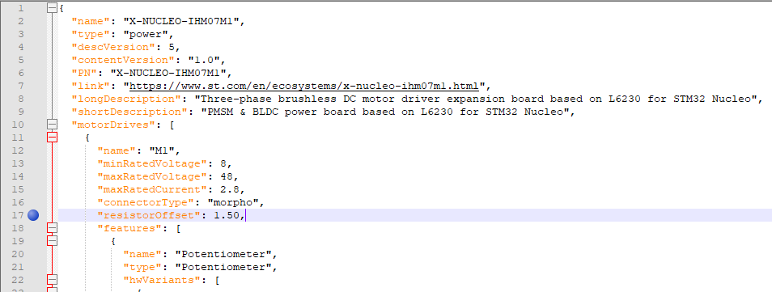
To profile a Hall sensor, first the user must configure the Motor Profiler project of the MCSDK WB with the speed auxiliary sensor Mode set to Hall sensor.
Figure 15 : MCSDK WB Hall sensor choice for "Auxiliary Sensor"
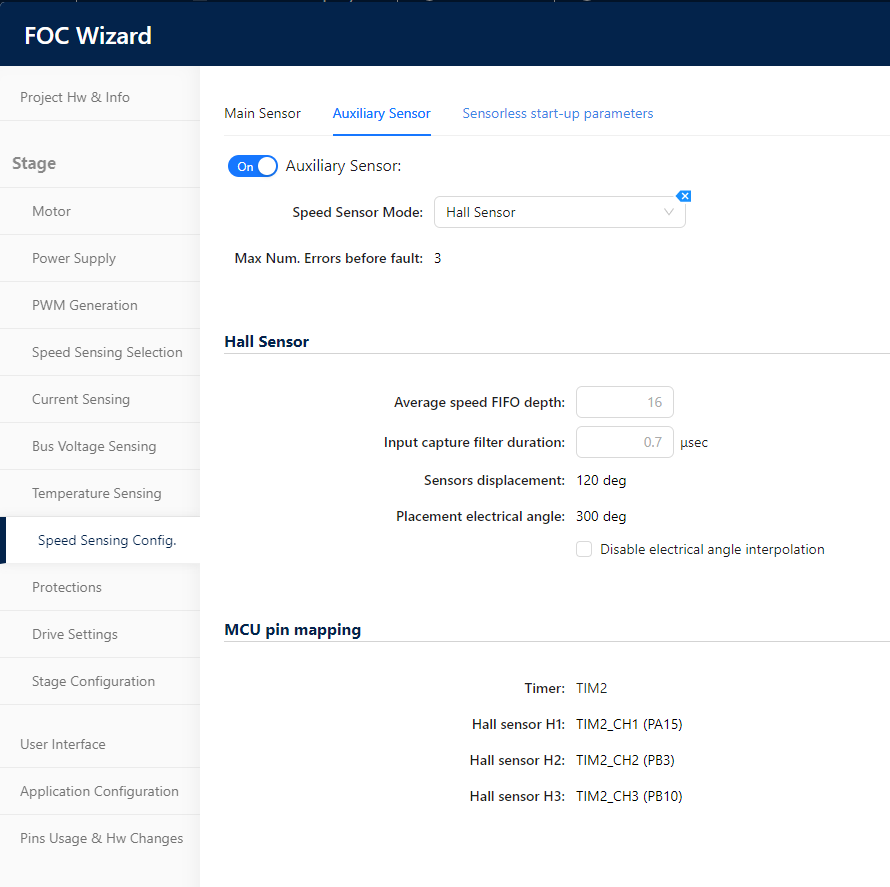
The Motor Profiler FW can be then generated, compiled and downloaded into the Flash as explained in previous chapter. As soon as the Motor Profiler tool is connected to the control or inverter board, the Hall sensor profiling window is accessible by pushing the button Hall Profiler button. Please note that the Start Hall profiling will be accessible only if a profiling of the motor has been executed previously. If it is not the case, please first launch a motor profiling and then profile the Hall sensor.
Figure 16 : Motor Profiler tool "Start Hall profiling" access
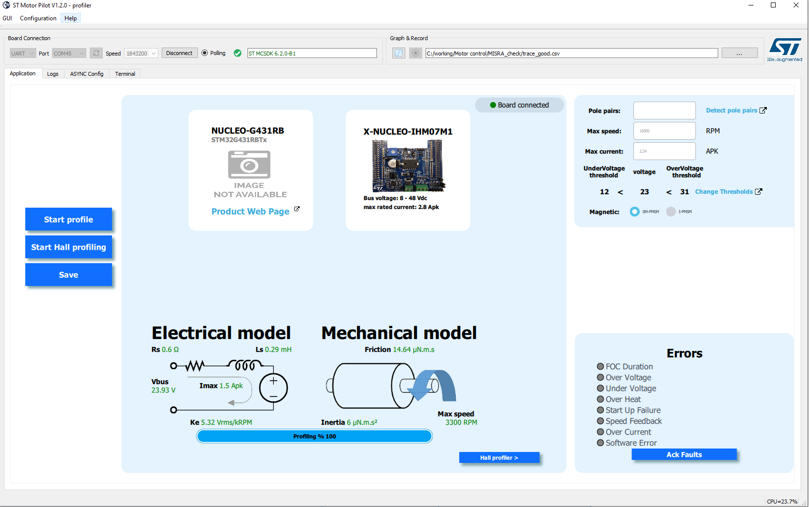
By pushing Hall profiler button, the Hall sensor profiling window is then displayed with the two Hall sensing parameters Placement electrical angle and Sensor displacement that will be computed during the profiling of the Hall sensor.
Figure 17 : Motor Profiler tool Hall profiler window
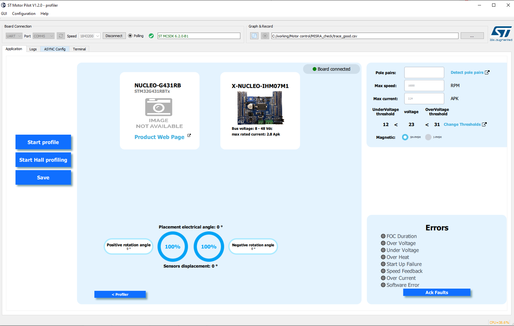
Please click on the Start Hall profiling to start the process. The Motor Profiler tool will ask the user at the beginning of the process to check the connections and the power supply required for a Hall sensor profiling.
Figure 18 : Motor Profiler tool Hall sensor connection and power supply check window
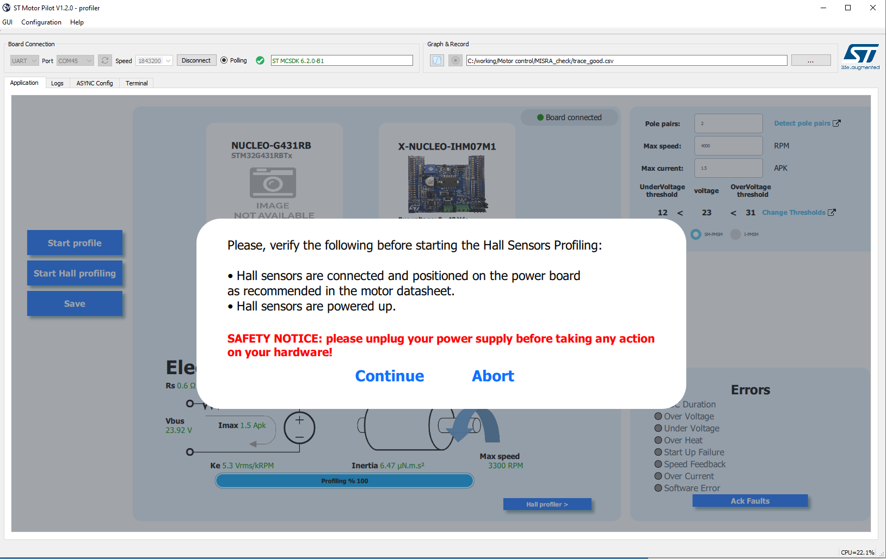
The Motor Profiler tool will also ask the user to verify that the motor is spinning into a positive direction. If it is not the case, please re-check your Hall sensor connection and power supply and, re execute the Hall senor profiling.
Figure 19 : Motor Profiler tool Hall sensor positive direction check window
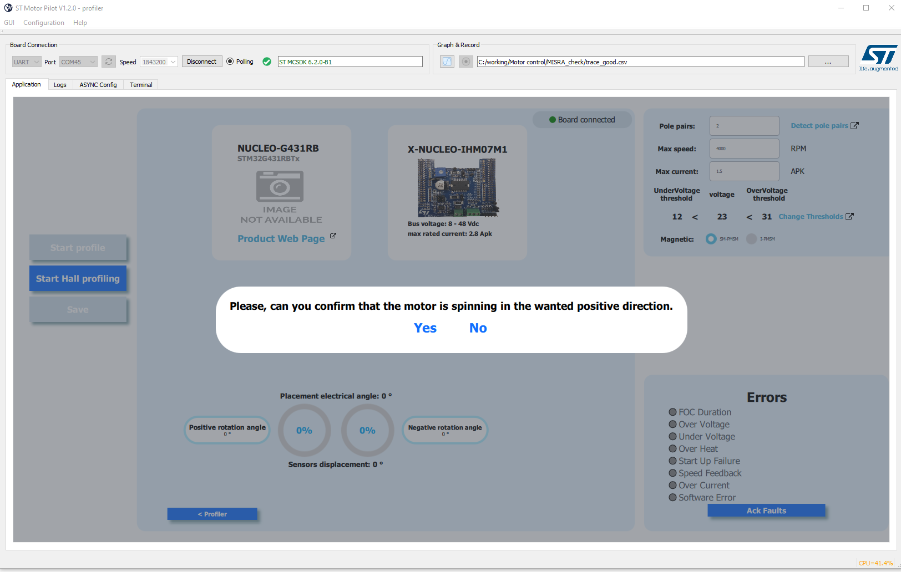
The Hall sensor profiling will be done in both directions. As soon as the two rotation directions processes are finished, the two computed values of the parameters are displayed.
Figure 20 : Motor Profiler tool Hall sensor computed parameters values
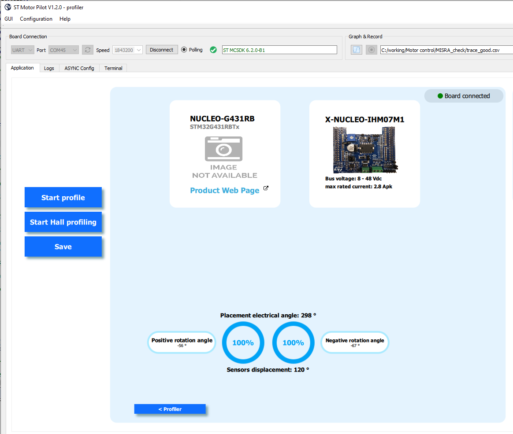
All parameters generated thanks to the motor and Hall sensor profiler can be stored into a MCSDK WB motor ,json database i.e. C:\Users\user_name\.st_workbench\hardware\motor.
Figure 21 : motor1.json file example
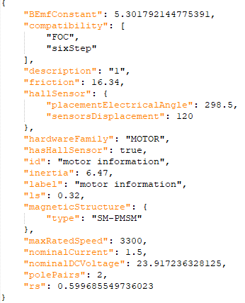
The compilation may fail if the ADC configuration regarding the number of ADC in Current Sensing stage is not supported by the Motor Profiler FW. The FW will try to link specific PWM current feedback function that is not embedded into library of Motor Profiler FW.
The following table shown examples of supported configuration by the Motor Profiler regarding ADC instance choice.
Table 3: example of ADC topology supported versus STM32 ICs
| ADC configuration compatibility | ADC1 | ADC1 / ADC2 |
|---|---|---|
| NUCLEO-F746ZG | N/A | OK |
| NUCLEO-H563ZI | OK | OK |
| NUCLEO-G431RB | OK | OK |
If parameter resistorOffset is not present into the .json file, the FW will takes into account the default value of this parameter (-32768) causing a bad sound when motor will start to spin during the profiling sequence.
This may happen, as for compilation errors, when a Motor Profiler project is generated with one 1 ADC configured for current sensing. It is recommended to only setup 2 ADCs configurations for any Motor Profiler project.
The FW was not able to find a suitable start-up speed ramp solution. Firstly, Max current and Max speed can be tuned to reach a functional speed startup ramp. Care should be taken to overwrite this values in the motor file once the profiling has succeeded. If it is not sufficient, please switch to Open Loop procedure and tune the speed startup ramp manually to find a functional solution, then reuse it into your profiler project. please refer for more details on Open loop Chapter
Some over or under voltage errors may occurs before the start of the profiling. Be sure that the voltage thresholds are well defined and update the change threshold area to match the desired values. This also can be caused by one 1 ADC configuration for current sensing.
A HW reset of the control or inverter board, or a new download of the "Motor Profiler" FW may cause the Motor Profiler tool to not allow a new Start profile. To retrieve the functionality, the user must disconnect the Motor Profiler tool, load the profiler.qml by executing a GUI/load GUI action and re-connect the Motor Profiler tool. Besides as shown before the "start profile" may not be accessible if the resitorOffset parameter is not present into the power or inverter board .json file.
Please generate a Motor Profiler project with the speed auxiliary sensor set in Hall sensor mode.
The motor is spinning in a negative direction at the beginning of the process.
The motor is spinning in a negative direction at the beginning of the process.
Motor Profiler feature is not compatible with ESC (Electronic Speed Control).
Motor Profiling will not end if negative speed target on Speed Control mode or negative Iq current target on Torque Control mode is used.
Prev: Getting Started with Motor Control SDK ↤| Table of Contents |↦ Next: Motor Control Firmware architecture